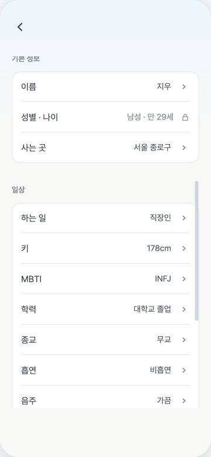

YAHWA · 프로필 수정
세 군데를 다듬어요. 위쪽 헤더는 스크롤하면 흐려지며 빠지게 하고, 채움 카드와 시트의 선택된 칩은 더 연한 바탕으로 바꿔요. 지금 둘 다 sky-300(#92C0DF)을 써서 글자가 묻혀 보여요.
지금은 내용이 헤더 아래에서 딱 잘려요. 상대 프로필 화면에서 이미 쓰는 방식(하늘 50 → 종이색, 흐림 10, 아래로 사라지는 마스크)을 그대로 가져와요. 스크롤을 내리면 나타나고 맨 위에서는 사라져요. 오른쪽 폰을 직접 스크롤해 보세요.
뒤로 버튼 아래 띠에서 목록이 끊겨요.

상대 프로필과 같은 헤더예요. 프로필 수정뿐 아니라 뒤로 버튼이 있는 기능 화면(취향 설정, 편지, 글 상세 등)에 함께 적용하는 걸 추천해요.
링과 “추가” 버튼만 강조색으로 남기고 바탕은 물러나게 해요. 어느 안이든 다 채우면 흰 카드로 바뀌는 건 같아요.
바탕이 진해서 설명 글(12px)이 묻혀요.
sky-50(#ECF5FC) 바탕. 화면 위쪽 하늘빛과 같은 결이라 붕 뜨지 않고, 링과 버튼이 또렷해요.
sky-100 70%. 카드라는 게 D1보다 잘 보이고 여전히 글자가 잘 읽혀요.
아래 항목 카드와 같은 흰 바탕 + 1px 테두리. “추가” 버튼도 연하게. 가장 차분하지만 눈길은 가장 약해요.
이 칩은 추천 설정 시트, 취향 설정 화면과 같은 공용 칩(.yh-chip)이라, 고르면 세 곳이 함께 바뀌어요. 칩을 눌러 보세요.
선택된 칩만 진하게 튀어서 글자가 무거워 보여요.
sky-50 바탕 + sky-500 1.5 테두리 + 진한 파랑 글자. 고른 게 테두리로 분명하고 바탕은 가벼워요.
sky-100 바탕 + sky-400 테두리. C1보다 고른 칩이 면으로 보여요.
바탕은 흰색 그대로, 테두리와 체크 아이콘으로만 표시해요. 가장 가볍지만 칩이 많으면 덜 눈에 띄어요.
--pe-done-bg를 새로 두고 고른 값을 넣어요.--chip-on-bg와 --chip-on-border만 바꾸면 세 곳이 함께 바뀌어요.